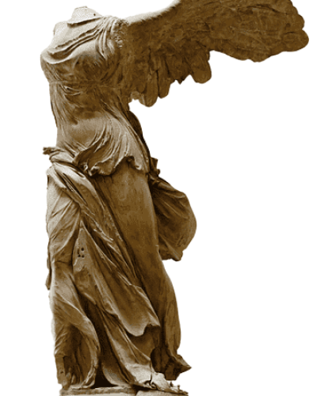
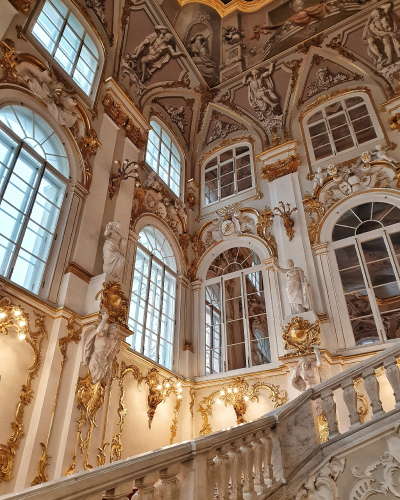
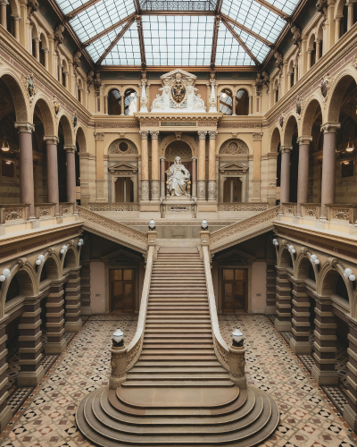
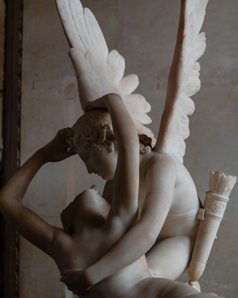

A B O U T
-
The Louvre Museum, located in the heart of Paris, France, is one of the largest and most renowned museums in the world, celebrated as a treasure trove of global art and culture. Originally built as a fortress by Philip II in the 12th century, it later became a royal residence and was eventually transformed into a public museum during the French Revolution in 1793. Today, the Louvre stands as a historic and cultural landmark, encompassing art and history across centuries.
The museum boasts an exhibition space of approximately 73,000 square meters and houses over 38,000 works of art. Among its most iconic pieces are Leonardo da Vinci's Mona Lisa, the ancient Greek sculpture Venus de Milo, and the Roman masterpiece Winged Victory of Samothrace. Additionally, visitors can explore an extensive collection that includes ancient Egyptian artifacts, Mesopotamian and Persian relics, medieval European works, and paintings from the Renaissance and Baroque periods.
- 
- 
- 
-
At the heart of the Louvre is the iconic glass pyramid, completed in 1989. Designed by Chinese-American architect I. M. Pei, the pyramid is considered a modern architectural masterpiece. It harmonizes with the traditional Louvre buildings while serving as a symbol of the museum's blend of history and modernity. Beneath the pyramid lies the main entrance and key facilities, offering visitors an efficient and contemporary experience. The Louvre Museum attracts over 10 million visitors annually, making it one of the most visited museums in the world. Beyond being a space to admire artworks, it serves as a center for learning and exploration through various exhibitions and educational programs.
Frequently featured in films, literature, and popular culture, the Louvre continues to inspire as a hub of artistic and cultural exchange. Regarded as a cultural icon not only in France but globally, the Louvre plays a crucial role in preserving and celebrating humanity's creative heritage and historical significance.
- 
The Louvre Museum began as a fortress in the late 12th century and was transformed into a royal palace by King Francis I in the 16th century, establishing its role as a cultural center. The foundation of its collection was laid with Italian Renaissance masterpieces. Under Henry IV and Louis XIV, the Louvre was expanded further, but after Louis XIV moved to Versailles, it served as a space for artists and scholars.During the French Revolution, royal art collections were confiscated, and the Louvre opened as a public museum in 1793. During Napoleon's rule, its collection grew significantly with acquisitions from Europe and the Middle East. The 19th and 20th centuries saw continued expansion, and in 1989, the iconic glass pyramid designed by I. M. Pei was added as a modern landmark.